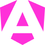

Tenho 22 anos e sou estudante de Sistemas de Informação na Universidade Federal de Goiás. Minha paixão pela tecnologia e informática me levou a direcionar minha carreira para o Desenvolvimento Front End.
Nos últimos dois anos, tenho atuado de forma independente no desenvolvimento web, aprimorando continuamente minhas habilidades com ferramentas essenciais e amplamente utilizadas no mercado. Estou comprometido em oferecer soluções de alta qualidade e inovadoras, tanto na área de desenvolvimento quanto na prototipagem de interfaces.